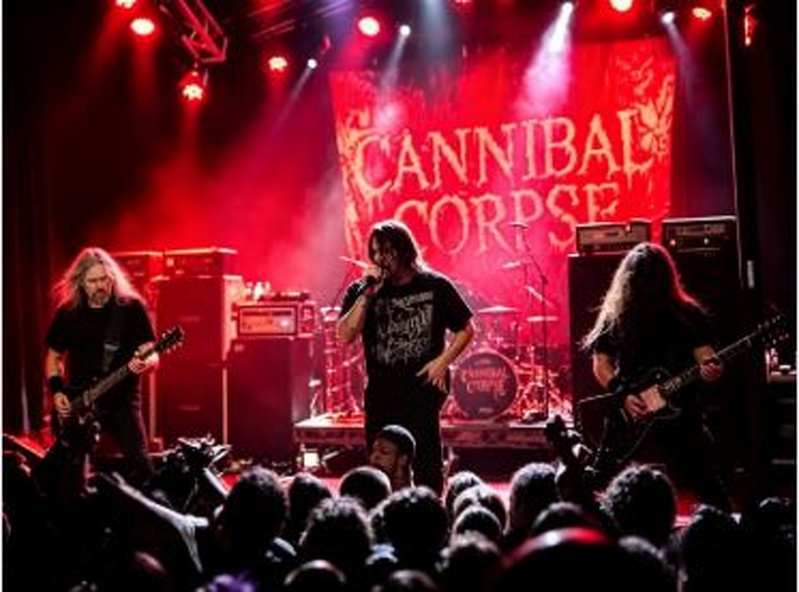
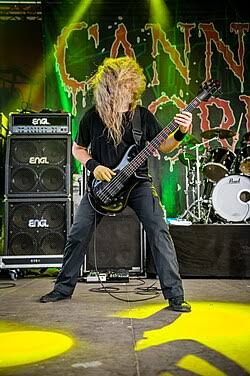

Cannibal Corpse
Você pode não gostar de death metal. Só não cometa o erro de achar que esses sujeitos não sabem tocar.
Primeiro, esqueça o barulho. Escute os músicos.
Cannibal Corpse é uma daquelas bandas capazes de encerrar uma conversa antes mesmo de a primeira música começar.
O nome, as capas, as letras, a velocidade e os vocais extremos fizeram do grupo uma das figuras mais reconhecidas — e controversas — da história do death metal.
Mas existe outra história escondida atrás de toda essa brutalidade.
É a história de músicos tecnicamente absurdos tocando composições que exigem precisão, resistência, sincronização e uma quantidade considerável de sanidade perdida durante os ensaios.
Mr. Nomad recomenda uma experiência: ignore o vocal por alguns segundos e siga apenas o baixo. Depois a gente conversa.
Buffalo, 1988. Cinco músicos e nenhuma intenção de tocar baixo.
O Cannibal Corpse surgiu em Buffalo, no estado de Nova York, em 1988, reunindo músicos que já haviam participado de diferentes grupos da cena underground local.
A formação inicial reuniu Chris Barnes nos vocais, Bob Rusay e Jack Owen nas guitarras, Alex Webster no baixo e Paul Mazurkiewicz na bateria.
Em uma época em que thrash metal e outras formas mais agressivas do heavy metal avançavam rapidamente, bandas subterrâneas começavam a levar velocidade, peso e agressividade ainda mais longe.
O Cannibal Corpse entrou exatamente nesse território.
Cannibal Corpse. O nome já avisava que aquilo não seria música para elevador.
Desde o início, a identidade da banda foi construída ao redor do horror extremo, do grotesco e da estética dos filmes de terror.
O próprio nome Cannibal Corpse — literalmente algo próximo de “cadáver canibal” — funcionava quase como uma declaração estética.
Não havia intenção de suavizar o produto. Muito pelo contrário.
As capas dos discos e as letras levariam essa escolha tão longe que alguns lançamentos enfrentariam restrições e controvérsias em diferentes mercados.
Quem faz o quê dentro da máquina.
George “Corpsegrinder” Fisher
Vocal extremo, presença física monumental e uma das vozes mais imediatamente reconhecíveis do death metal.
Alex Webster
Baixista, membro fundador e um dos pilares técnicos do Cannibal Corpse.
Rob Barrett
Guitarra, riffs e parte fundamental da arquitetura pesada do grupo.
Erik Rutan
Guitarrista e produtor com longa história dentro do metal extremo.
Paul Mazurkiewicz
Baterista e membro fundador. O motor rítmico que ajuda a manter a violência organizada.

Alex Webster: precisão onde aparentemente existe caos.
Agora chegamos ao sujeito que interessa particularmente ao Mr. Nomad.
Alex Webster é membro fundador do Cannibal Corpse e se tornou um dos baixistas mais respeitados do metal extremo.
Em uma parede sonora dominada por guitarras distorcidas, bateria veloz e vocal brutal, o baixo poderia simplesmente desaparecer.
Webster escolheu outra alternativa: participar da arquitetura da música.
No Cannibal Corpse, o baixo não está procurando um lugar para se esconder.
Cinco portas de entrada para o caos.
Quer entender a banda? Comece por aqui.
Agora esqueça a ficha técnica. Veja a máquina funcionando.
Depois da história, vem o palco: peso, precisão, velocidade e o baixo de Alex Webster trabalhando no meio do caos.
Aperte play aqui mesmo. Você continua dentro da Passport Radio.
Algumas coisas que talvez você não esperasse.
Alex Webster é um dos membros fundadores e permaneceu como peça central da identidade musical da banda através de diferentes formações.
George Fisher ficou conhecido pelo apelido “Corpsegrinder”, nome que acabou se tornando praticamente inseparável de sua identidade artística.
Apesar da estética extrema, a banda construiu uma carreira marcada por enorme disciplina de turnês e consistência musical.
O Cannibal Corpse tornou-se uma referência mundial do death metal e ajudou a levar um gênero originalmente underground para uma audiência internacional.
Brutalidade é fácil. Tocar brutalidade com precisão é outra conversa.
Talvez Cannibal Corpse nunca seja a banda que você coloca para acompanhar o café da manhã.
Tudo bem.
Mas da próxima vez que alguém disser que death metal é apenas barulho, faça uma coisa.
Coloque um bom fone. Escolha uma música. E siga o baixo de Alex Webster.
— Mr. Nomad